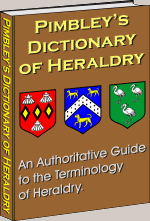

Tuesday, July the 4th, 2006
back to: title, date or indexes
Regular readers will have gathered that the bulk of the prose in Hooting Yard is the result of many, many hours of painstaking research. Before writing Pipistrelle Pursuivant, for example—see below, 25th June—I needed to know a lot more about heraldic bats than I did when I woke up that morning. Indeed, I had much to learn about bats, and even more about heraldry. To gain a precarious foothold in the latter, one of my sources was Pimbley's Dictionary of Heraldry. I must say, having read it in full, that this is the very model of what a dictionary can be. Seldom have I found such a rigorous approach to the act of definition. Pimbley's are clear, succinct, and remarkable. Take this, as just one example: there you are, thumbing through your heraldic dictionary, wanting—even needing—to know what is meant by the phrase ‘Barry bendy dexter and sinister’. Pimbley defines it as ‘a combination of barry and bendy dexter and sinister’. Isn't that perfect? You close the book, thump your fist on your escritoire, and furrow your brow, older and wiser than you were but a minute ago.

Hooting Yard on the Air, July the 19th, 2006 : “World of Birds” (starts around 20:57)